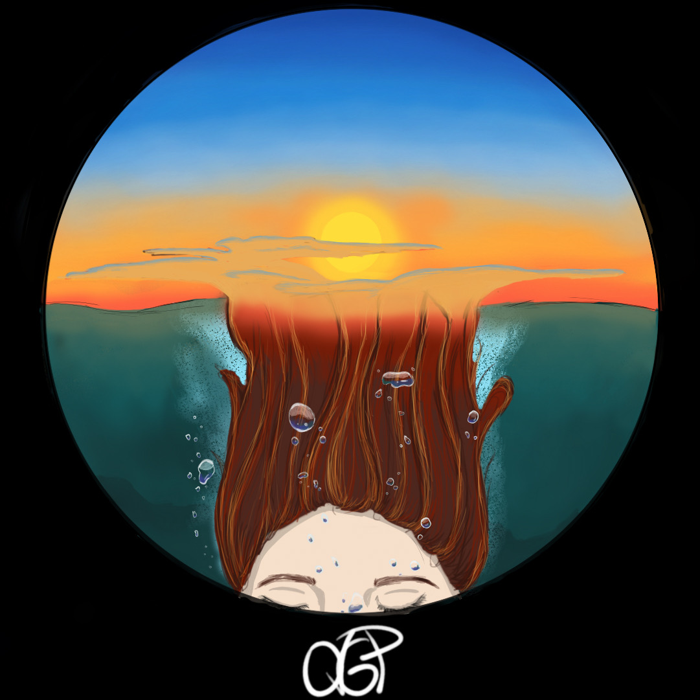
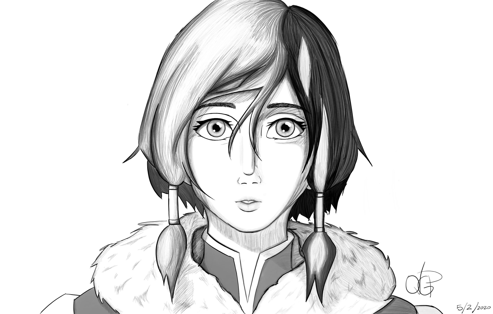

In the raster image assignment, we were asked to make a self-portrait using a selfie and Adobe Photshop. I was nervous at first because I did not know how to use photoshop, it was my first time using it. I used a piece that I had done before as my selfie, then I added a picture from NASA's website (which are not copyrighted) and proceeded to use different tools from the program. if I am honest I still to this day do not know how I achieved that specific effect. I had fun in the making of this project, and I look forward to work more with Adobe PS and figure out which tool I used.
The Audio project was intresting to do. It was my first time working with audacity, or with any audio programs in general. It was a fun experience. In the audio we hear a girl who suffers of social anxiety, when in a crowd she begins to have a panic attack, then proceeds to plug in her headphones and listen to music, that allows her to isolate herself from the world, and to focus on herself, which causes her heartbeat to slow down.
I chose this story because I can in a way identify myself with the girl. I have thankfully never suffered of any panic attacks or anxiety, but I do use music to calm myself down or to simply go back to myself, because often when we are in public we act in a certain way even without noticing it. Music allows us to feel and therefore connect with ourselves.
In the written vertion I wanted to describe the main message of what the animation would show.
I really enjoy drawing and illustration. I do digital drawings as a hobby, here are some examples:

This might be one if not my favorite piece I have ever made. Where I combine both fantasy and reality. I struggled to make this piece because I was still just starting to bet comftable with the program. The program that I used was Sketchbook, but it was something new, and a challenge, which I guess it was the part I enjoyed the most.
This was around a year ago. Then again I was still getting used to the program, but I am actually quite proud of her, her name is Akira (あきら) it means Bright/Intelligent in Japanese, even though it says "I love you" in Korean on her headphones.. I did not thought that through, now did I? I guess we all do silly (to not say stupid) things hen we are 16.
This the most recent one I have done. I inspired this Fanart on a character in the Webtoon Lore Olympus named Persephone. She is the main character, she is a really strong woman who's character is very well written. Lore Olympus is one of my favorite Webtoons, not only because of the amazing plot and well wtitten characters, but also because of the eye-catching and mesmerizing art, the author Rachel Smythe has a unique and beautiful art style that is simply satisfying to watch, and that makes you happy by just looking at it.

I do a lot of Fanart, but this is my favorite piece of fanart that I've done. She is the main protagonist from the tv show (that I mentioned before in my About Me page) The Legend of Korra. Ever since the tv show came out I had admired her, not because of her powers or because how physically strong she is, but rather because of how human she is regardless of her strength, she is strong both physically and psychologically. They show how she deals with her previous nattles and how her past enemies still haunted her, they gave humanity to a crtoon character, where the creators did not make her into this immortal being, but rather someone who makes mistakes and that learns from those same mistakes.